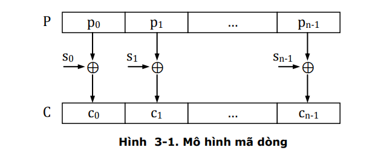

- Bản rõ được chia thành các đơn vị mã.Mỗi đơn vị mã gồm k bit.P = P1||P2||Pb...Pn-1.
- Dùng một khóa k để sinh ra các số ngẫu nhiên có kích thước bằng kích thước đơn vị mã.S
- Dùng phép toán XOR cho cả hai để sinh ra bản mã cuối cùng.

- A5/1: được dùng trong mạng điện thoại GSM(Global System Message), để bảo mật dữ liệu trong quá trình liên lạc giữa máy điện thoại và trạm thu sóng vô tuyến.Đơn vị mã hóa của A5/1 là một bit.Bộ sinh số ngẫu nhiên mỗi lần sẽ sinh ra bit 0 hoặc 1 để sử dụng phép XOR.Mã hóa A5/1 có tốc độ nhanh do đó nó được dùng để mã hóa các dữ liệu real-time.
- RC4: được dùng trong giao thức SSL(Secure Sockets Layer) dùng để bảo mật dữ liệu trong quá trình trao đổi giữa Browser và WebServer.Ngoài ra RC4 còn được dùng trong mã hóa WEP(Wired Equivalent Privacy) của mạng Wireless LAN.Hiện tại do tính bảo mật WEP kém nên đã thay thế bằng WPA2 (Wifi Protected Access).Đơn vị mã hóa của RC4 là 8 bit.
Back Page